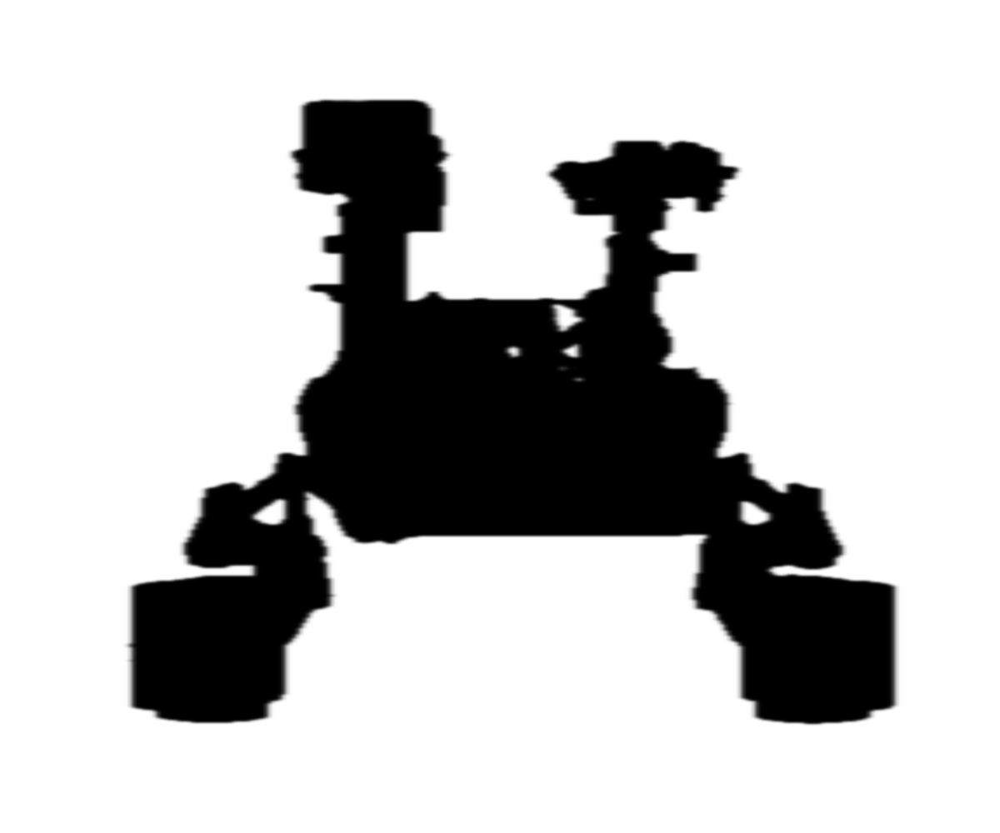
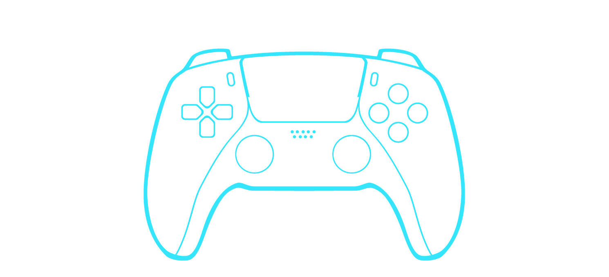

MARTIAN ROBOTSMISSIONEXPLORER
MARTIAN-ROBOTS
3D workspace
Select a source image, then run the readiness check.
Mouse wheel: dolly · Gamepad: exponential sticks, L1 + left stick vertical inspects/dollies, R2 rises, L2 descends above terrain, L3 resets, R3 focuses rover, Square toggles fullscreen.
Rover model calibration
Values are in scene metres and degrees. They remain unverified until the model-frame audit is complete.
50 cm calibration cube
Red cube centre in scene metres. The cube stays axis-aligned on the surface; cyan +Z arrow is 0° forward.
NASA mesh calibration
Values apply only to the currently loaded PDS mesh product and are stored locally with that product.
Local mesh calibration
Only the locally reconstructed heightfield is affected.
Experimental planetarium calibration
This disabled-by-default 3D path maps the Sol panorama and locally deforms the same planetarium mesh. Only polygons reached by the local stereo grid are tessellated.
Panorama calibration
Only the stereo source-image reference is affected.
EXPORT
PANORAMA EXPORT
Layered equirectangular panorama
LOCATION EXPORT
Location image package
Choose image layers, then download or copy the source URLs and metadata.
MISSION CONTROL
Explorer controls
Navigate the panorama, inspect overlapping source frames, and move through each rover’s mapped locations.
Mouse & panorama
- Drag
- Look around the panorama.
- Mouse wheel
- Zoom in and out.
- Alt + hover
- Reveal the overlapping image beneath the pointer.
- Click an image
- Open its image information panel.
- Shift + click
- Select or remove one image.
- Shift + drag
- Draw a circular image selection.
Keyboard
- A / D
- Move the virtual camera left / right.
- W / S
- Move the virtual camera forward / back.
- Q / E
- Move the virtual camera up.
- C
- Move the virtual camera down.
- Space
- Smoothly return the virtual camera to the panorama centre.
- Esc
- Cancel an image selection, close a notice, or close this help.
Navigation & layers
- Sol stepper
- Change the requested Martian day; loading fetches a new public image set.
- Location stepper
- Move through mapped rover stations, including the adjacent Sol when necessary.
- Location resolution
- Merge or separate nearby rover positions within the active Sol.
- Layer spacing
- Adjust the faux-depth separation of overlapping captures.
- Fullscreen
- Use the upper-right canvas button for an unobstructed view and live HUD feedback.
GAMEPAD
Controller mapping
Standard Gamepad mapping is supported. Analog sticks and triggers use exponential response after their dead zones.

Left stick · move camera Right stick · look L1 · Instrument Wheel L2 · analog zoom R1 · move up R2 · move down L3 · reset camera R3 · reveal image beneath D-pad · location & resolution Circle · Escape Square · Fullscreen Triangle + D-pad ↑/↓ · layer spacing- D-pad left / right
- Decrease / increase location resolution.
- D-pad up / down
- Next / previous mapped location.
- Triangle + D-pad up / down
- Increase / decrease layer spacing.
INTERNAL TOOL
Research Mode
INTERNAL TOOL
Invalid Sols
Export the complete local inverse cache as the four package files, or import the files after dropping them here.
STATE TRANSFER